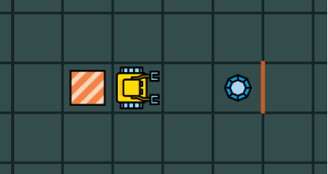

5. 编程¶
5.1 目标¶
- 写你第一个计算机程序
- 了解算法和程序的区别
- 了解逻辑错误与句法错误的不同
- 了解调试是计算机编程不可分的一部分
5.2 输入命令¶
命令将输入左边面板中的代码元包. 在编程模式中, 我们可以使用命令left, right, go, get, put, repeat等还有许多. 一条或多条命令组成计算机程序或代码. 这里可以记住两条简单的规则:
- 总是在每行输入一个命令
- 缩进是有影响的 — 每个命令在行头开始
遵循这些规则有助于使你的代码干净,可读.
5.3 算法¶
Karel总是严格执行你的命令.没有例外.如果机器人做错了什么,比如撞墙了,那很有可能不是它的错误而是你的错误. 你的算法是错的.
算法是完成指定任务的一系列逻辑步骤.
算法是用人类通用语言写的.考虑以下迷宫,Karel的任务是捡起宝石并返回它的家.

{kind=link}
图1.拾起宝石并回家
这个任务可以用以下算法解决:
向前走两步
拾起宝石
转回身
向前走三步
下一节我们将此算法转化为计算机程序.
5.4 程序¶
将算法翻译成特定的计算机语言形成程序.
在我们的课程里使用Karel语言. 对应于上述算法的程序是
go
go
get
left
left
go
go
go
通常将算法翻译为程序有多种方法.比如上述算法同样可以翻译为
go
go
right
get
right
go
go
go
5.5 逻辑和句法错误¶
算法中的错误是逻辑错误.
让我们回到上面的问题,考虑以下算法
向前走三步
拾起宝石
转身
向前走三步
这将使机器人撞毁! 我们做出了错误的计划 — 逻辑错误.
程序中,诸如拼错命令,将"10"写成"1O",或者忘记缩进则属于句法错误.
找到下面程序的三处错误!
go
go
got
rlght
night
go
go
go
上述任何一种错误都属于 bugs,取消它们的过程叫做调试(debugging). 根据我们准备算法和写程序的认真程度,调试时间可以很长或者很短. 刚刚编好的程序完全正确并不常见.
通常逻辑错误比句法错误更难被发现.因此,在开始编程前,要确保设计好的算法并且全面地考虑问题.
当我们的程序出现句法错误,机器人会输出一个错误消息并且什么也不做. 当我们的程序出现逻辑错误,很多事情都会发生:机器人会执行程序尽管并不能完成任务.或者它有可能触发错误消息并且停止程序.